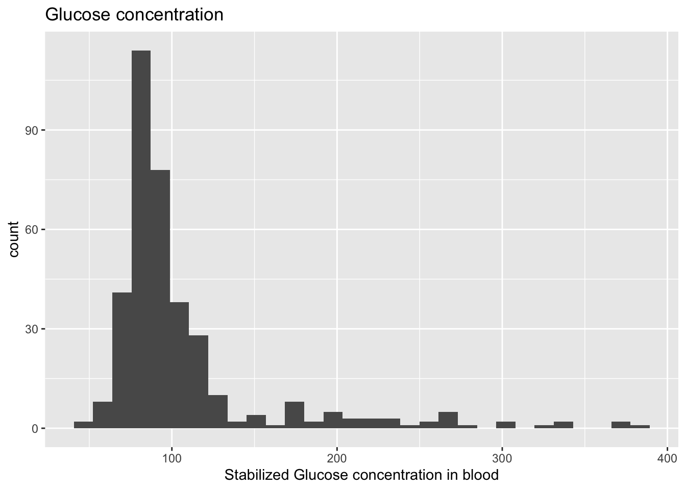
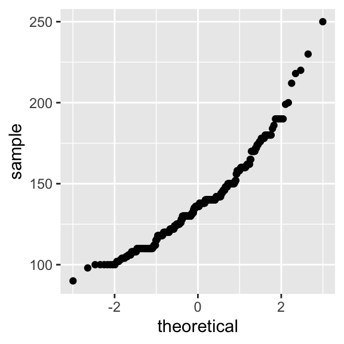

1 WEEK 1: Descriptive statistics and data types
Today, you will learn how to perform basic tasks on a dataframe/tibble, descriptive statistics, perform data cleaning, and plotting.
1.1 Data features and where to find them
1.1.1 Load the data
The diabetes dataset, which we will be using in this practical class will be downloaded from an online repository. We will load that into R and have a sneak peek into how it looks like with the console. In the following you will see several functions that give us information about our dataset.
dat = as_tibble(read.delim('https://tinyurl.com/y4fark9g')) # Load the dataset
head(dat, 10) # Look at the first 10 lines of the table## # A tibble: 10 × 19
## id chol stab.glu hdl ratio glyhb location age gender height weight
## <int> <int> <int> <int> <dbl> <dbl> <chr> <int> <chr> <int> <int>
## 1 1000 203 82 56 3.60 4.31 Buckingham 46 female 62 121
## 2 1001 165 97 24 6.90 4.44 Buckingham 29 female 64 218
## 3 1002 228 92 37 6.20 4.64 Buckingham 58 female 61 256
## 4 1003 78 93 12 6.5 4.63 Buckingham 67 male 67 119
## 5 1005 249 90 28 8.90 7.72 Buckingham 64 male 68 183
## 6 1008 248 94 69 3.60 4.81 Buckingham 34 male 71 190
## 7 1011 195 92 41 4.80 4.84 Buckingham 30 male 69 191
## 8 1015 227 75 44 5.20 3.94 Buckingham 37 male 59 170
## 9 1016 177 87 49 3.60 4.84 Buckingham 45 male 69 166
## 10 1022 263 89 40 6.60 5.78 Buckingham 55 female 63 202
## # ℹ 8 more variables: frame <chr>, bp.1s <int>, bp.1d <int>, bp.2s <int>,
## # bp.2d <int>, waist <int>, hip <int>, time.ppn <int>1.1.2 Dimensions and naming
1. What is the dimension of our dataset (i.e. how many rows/columns are there in our data)
## [1] 403 192. What are the column names of our dataset
## [1] "id" "chol" "stab.glu" "hdl" "ratio" "glyhb"
## [7] "location" "age" "gender" "height" "weight" "frame"
## [13] "bp.1s" "bp.1d" "bp.2s" "bp.2d" "waist" "hip"
## [19] "time.ppn"Probably you are confused about what these column names mean. For more description on these values look here
1.1.3 Numerical features
3. How do we extract the minimum and maximum age of patients in our dataset?
Can you find out the same for height and weight?
4. How does the overall summary of our entire dataset look like?
Can you explain what you see after you run the
summary()function?
Feel free to play around with this syntax until you feel comfortable with it.
You can open a window with View(dat) to compare your results.
1.2 Data cleaning
Very often the first thing one needs to do before any data science project is to clean up the raw data and transform it into a format that is readily understood and easy to use for all downstream analysis. This process usually involves: –
- Removing empty value rows/columns
- Removing unused or unnecessary rows/columns
- Reordering the data matrix
- Keeping columns uniformly numeric (age, weight etc) or string (names, places etc) or logical (TRUE/FALSE, 1/0)
- Handling strange caveats which are data specific like replacing
,or., or;from numbers etc
Lets do some clean up of our own diabetes data
- We will make the
idcolumn the row names for the dataset; - We will remove the
bp.2sandbp.2dcolumns as it has mostly missing values (see summary above); - We will also remove the column
time.ppnwhich will not be required in our analysis; - We will reorder the columns of the data such that all the qualitative and quantitative values are separated.
To perform this cleanup, we need a couple of important functions, that we will first discuss:
filteris.namutateaccross%in%
1.2.1 filter()
filter() is used on a dataset to filter rows satisfying a condition you specify like we saw previously (Introduction).
Let’s look at an example. We are only filtering for senior individuals in our dataset.
We can also filter based on other conditions, like location, sex, among others.
In some cases, we can also use which() to filter values. The syntax is different…
… but it works for vectors and other classes. Let’s see the next example.
# number of animals you have
number = c(2,3,4,5,1,2,5)
# Let's create a different vector (of the same length)
animals = c("cat", "dog", "cow", "parrot", "zebra", "sparrow", "lizard")
# Let's use the "which()" function now
animals[which(number > 2)]## [1] "dog" "cow" "parrot" "lizard"We selected all animals from the “animals” vector that correspond to more than three individuals in the “number” vector.
1.2.2 is.na()
is.na() is used to determine if NA values are present in a given object. We can try a simple example with one variable being assigned as NA.
## [1] FALSE## [1] TRUEWe can do this with vectors obtained from dat. What class is the output in?
1.2.3 mutate()
mutate() is often used to create a new column based on another column of the dataframe. Let us use this function to mutate two new columns including the weight in kilograms and the height in centimeters. The conversion from pounds to kilograms can be done by multiplying weight in pounds by 0.454. To covert height to centimeters we only need to multiply height (inches) by 2.54.
dat %>%
mutate(weight.kg = weight * 0.454, # you can generate both columns using the same mutate!
height.cm = height * 2.54) %>% # we do not need to save this output
select(id, weight.kg, height.cm)## # A tibble: 403 × 3
## id weight.kg height.cm
## <int> <dbl> <dbl>
## 1 1000 54.9 157.
## 2 1001 99.0 163.
## 3 1002 116. 155.
## 4 1003 54.0 170.
## 5 1005 83.1 173.
## 6 1008 86.3 180.
## 7 1011 86.7 175.
## 8 1015 77.2 150.
## 9 1016 75.4 175.
## 10 1022 91.7 160.
## # ℹ 393 more rows1.2.4 accross()
accross() is very often used together with mutate() and another helper function, like everywhere(), starts_with(), ends_with(), or contains().
Later, we will use accross() together with the other functions we learned previously to remove NAs like this:
There is much to unpack here:
+ rowwise() ensures that the next operations are applied by row.
+ mutate() adds a new column called na_count to the dataframe.
+ across(everything()) selects all columns in the current row.
+ sum(is.na(...)) calculates the sum of missing values for each row.
Try to run the previous example without
rowwise(). What does it look like?
1.2.5 %in%
This is an operator to check which elements of a first vector are inside a second vector.
## [1] TRUE TRUE1.2.6 Ready for the cleaning!
The first column of the dataframe is the column with the name “id”.
The rows are just numbered, without names.
We are going to rename the rows using the column “id”. The function column_to_rownames() allows us to do this efficiently.
Keep in mind that rownames must be unique!
The na_count column will then include the number of NAs per row. Do you understand how it works?
We finally apply filter again to keep only rows with less than or 2 NAs.
dat = dat %>%
rowwise() %>%
mutate(na_count = sum(is.na(across(everything())))) %>%
filter(na_count <= 2)We will also remove the na_count and some problematic columns (bp.2s, bp.2d and time.ppn) by selecting the ones which are not these. We can do this using !, as this character can be used to invert results. Let us try it with select().
Next, we can re-order the remaining columns, in order to put the categorical columns first, and numerical columns after. We can use select to order columns too, but we need to combine it with where() and functions which verify the class of the columns, like is.character() or is.numeric().
Here is a simple example:
# Create a character and numeric
name = c("Antonia")
age = c(23)
# Verify if the previous object are from the character/numeric classes
is.character(name)
is.character(age)
is.numeric(age)And here we can apply the same principle to the re-ordering:
dat <- dat %>%
select(
# Select categorical columns
where(is.character),
# Select numerical columns
where(is.numeric)
)
# OR you can use the indexes too, but if you more than 10-20 columns, that is not ideal
# dat = dat[,c(8,6,11,9,10,14,15,2,5,1,3,4,12,13)]Now lets look at our cleaned data:
## location gender frame chol
## Length:377 Length:377 Length:377 Min. : 78.0
## Class :character Class :character Class :character 1st Qu.:179.0
## Mode :character Mode :character Mode :character Median :204.0
## Mean :208.2
## 3rd Qu.:230.0
## Max. :443.0
##
## stab.glu hdl ratio glyhb
## Min. : 48.0 Min. : 12.00 Min. : 1.500 Min. : 2.680
## 1st Qu.: 81.0 1st Qu.: 38.00 1st Qu.: 3.200 1st Qu.: 4.390
## Median : 90.0 Median : 46.00 Median : 4.200 Median : 4.860
## Mean :107.3 Mean : 50.36 Mean : 4.538 Mean : 5.594
## 3rd Qu.:108.0 3rd Qu.: 59.00 3rd Qu.: 5.400 3rd Qu.: 5.622
## Max. :385.0 Max. :120.00 Max. :19.300 Max. :16.110
## NA's :3
## age height weight bp.1s
## Min. :19.0 Min. :52.00 Min. : 99.0 Min. : 90.0
## 1st Qu.:34.0 1st Qu.:63.00 1st Qu.:151.0 1st Qu.:122.0
## Median :45.0 Median :66.00 Median :174.0 Median :136.0
## Mean :46.9 Mean :66.02 Mean :178.1 Mean :137.4
## 3rd Qu.:60.0 3rd Qu.:69.00 3rd Qu.:200.0 3rd Qu.:148.0
## Max. :92.0 Max. :76.00 Max. :325.0 Max. :250.0
##
## bp.1d waist hip
## Min. : 48.00 Min. :26.00 Min. :30.00
## 1st Qu.: 75.00 1st Qu.:33.00 1st Qu.:39.00
## Median : 82.00 Median :37.00 Median :42.00
## Mean : 83.69 Mean :37.95 Mean :43.08
## 3rd Qu.: 92.00 3rd Qu.:41.25 3rd Qu.:46.00
## Max. :124.00 Max. :56.00 Max. :64.00
## NA's :1 NA's :1The ordering and selection of columns looks right, however it seems that there are certain rows that have missing values still (like glyhb column has 3 NA values still).
Lets remove all rows with any missing value using na.omit().
Remember, 1 row = 1 patient.
How many patients were removed because they were associated with missing values?
Now our cleaned data has no missing values, columns are cleanly ordered and each column is in the right format
## location gender frame chol
## Length:367 Length:367 Length:367 Min. : 78.0
## Class :character Class :character Class :character 1st Qu.:179.0
## Mode :character Mode :character Mode :character Median :204.0
## Mean :207.5
## 3rd Qu.:229.0
## Max. :443.0
## stab.glu hdl ratio glyhb
## Min. : 48.0 Min. : 12.00 Min. : 1.500 Min. : 2.680
## 1st Qu.: 81.0 1st Qu.: 38.00 1st Qu.: 3.200 1st Qu.: 4.390
## Median : 90.0 Median : 46.00 Median : 4.200 Median : 4.860
## Mean :107.3 Mean : 50.28 Mean : 4.536 Mean : 5.602
## 3rd Qu.:108.0 3rd Qu.: 59.00 3rd Qu.: 5.400 3rd Qu.: 5.630
## Max. :385.0 Max. :120.00 Max. :19.300 Max. :16.110
## age height weight bp.1s
## Min. :19.00 Min. :52.00 Min. : 99.0 Min. : 90.0
## 1st Qu.:34.00 1st Qu.:63.00 1st Qu.:151.0 1st Qu.:121.5
## Median :45.00 Median :66.00 Median :174.0 Median :136.0
## Mean :46.68 Mean :66.05 Mean :178.1 Mean :137.1
## 3rd Qu.:60.00 3rd Qu.:69.00 3rd Qu.:200.0 3rd Qu.:148.0
## Max. :92.00 Max. :76.00 Max. :325.0 Max. :250.0
## bp.1d waist hip
## Min. : 48.0 Min. :26.00 Min. :30.00
## 1st Qu.: 75.0 1st Qu.:33.00 1st Qu.:39.00
## Median : 82.0 Median :37.00 Median :42.00
## Mean : 83.4 Mean :37.93 Mean :43.04
## 3rd Qu.: 92.0 3rd Qu.:41.50 3rd Qu.:46.00
## Max. :124.0 Max. :56.00 Max. :64.00Can you identify which types of data (continuous, discrete etc) each column above represents and why?
1.3 Visualizing data distribution
In this section you will also learn the essential functions to plot data in an intuitive and useful way using the ggplot2 package, just like in the introductory section to tidyverse.
1.3.1 Histograms
We can plot the column “stab.glu” as a histogram using the hist() function:
ggplot(dat,
aes(x = stab.glu)) +
geom_histogram() +
labs(x = "Stabilized Glucose concentration in blood", # add labels to the x-axis
title = "Glucose concentration") # add title
Add the parameter
bins = 50in the above lines of code (insidegeom_histogram) and see what happens. Try different values forbinslike10, 20, 75, 100. Can you interpret the differences? Is this a good or bad thing about histograms?
1.3.2 Density plots
For density plots, we use the geom_density() function to estimate the probability density function for a given variable.
ggplot(dat,
aes(x = stab.glu)) +
geom_density() +
labs(x = "Stabilized Glucose concentration in blood", # add labels to the x-axis
title = "Glucose concentration") # add title
1.3.3 Boxplots
The boxplot() function produces a boxplot for a given variable:
ggplot(dat,
aes(x = stab.glu)) +
geom_boxplot() +
labs(x ="Stabilized Glucose concentration in blood")
Can you explain all features of this graph, such as upper/lower whisker, 25% quantile, …?
1.3.4 QQ-plots
We can use QQ-plots to either (1) compare two distributions, or (2) compare a distribution with a theoretical distribution (typically the normal distribution).
We can for example compare the distribution of the blood pressure values to check if they are normally distributed

Now we can use the function geom_qq() to generate the QQ-plot of this distribution against the standard normal distribution:
ggplot(dat,
aes(sample = bp.1s)) + # we use sample= inside aes for the QQ-plot
geom_qq() # creates the QQ-plot
Using the additional command geom_qq_line(), we can add a straight line that goes through the first and third quartile:
ggplot(dat,
aes(sample = bp.1s)) + # we use sample= inside aes for the QQ-plot
geom_qq() +
geom_qq_line() # adds in the QQ-line on top
So, is the distribution normal??
Now let’s compare the quantiles of the cholesterol values by biological sex.
Notes on ggplot() here: Rather than ggplot(dataset, aes(...)) we use ggplot() + geom_xx(aes(...)) for situations where the data we wish to plot is not in a dataframe.
# We can use "filter()" to filter the cholesterol values for men and women
dat.male = dat %>%
filter(gender == 'male')
dat.female = dat %>%
filter(gender == 'female')
# Compute the quantiles (note the "na.rm" option to ignore missing NA values!)
q.male = quantile(dat.male$bp.1s,
probs=seq(0,1,by=0.05),
na.rm=TRUE)
q.female = quantile(dat.female$bp.1s,
probs=seq(0,1,by=0.05),
na.rm=TRUE)
# Now plot against each other!
ggplot() +
geom_point(aes(x = q.male, y = q.female)) +
labs(title = "Quantiles", x = "Male quantiles", y = "Female quantiles")
1.4 Correlation
1.4.1 Measuring the centrality in data
Before you begin, think back to the mean, median and quantiles we saw on the boxplot. Do you remember what these terms mean? How does an asymmetrical distribution influence mean and median?
We have already seen that the summary() and quantile() functions in R can compute the mean, median and quantiles of any given data.
Calculate the mean and median of other continuous numeric data in the diabetes dataset and measure the difference between them. (a) Why is there a difference between the mean and median? (b) Why do you think there are larger differences for some and almost no difference for others?
1.4.2 Association between variables
Often a common step during any data analysis project is to find associations between variables present in the dataset. Such associations helps us to decipher the underlying structure in the data.
For instance, in our diabetes dataset we would expect a high correlation between free blood glucose levels and glycosylated blood levels or between waist and hip sizes. One of the most common ways of measuring associations is correlations.
Let us start by producing a scatter plot between a pair of variables:
ggplot(dat,
aes(x = stab.glu, y = glyhb)) +
geom_point() +
labs(x='Stabilized glucose', y='Glycosylated hemoglobin')
Do you suspect that the two variables have a relationship? Do the scatter plot for other pairs of numerical variables!
We now can compute the correlation of the two variables. We can compute the Pearson correlation or the Spearman correlation:
## [1] 0.7411355## [1] 0.5214866The Spearman correlation seems much lower, right? To understand why, we can do a scatter plot between the ranks of the two variables:
ggplot(dat,
aes(x = rank(stab.glu), y = rank(glyhb))) +
geom_point() +
labs(x='Rank - Stabilized glucose', y='Rank - Glycosylated hemoglobin')
Do you understand the usage of ranks here? Run `rank()`` on a vector like c(3,5,10,1,23) to see how the output looks like.
Associations are among the simplest forms of structure in the data! It is important to remember that Association does not imply correlation and Correlation does not imply causation. Take a look at this page to view few common logical fallacies. see here
1.5 EXERCISES
1.5.1 Exercise 1: Data features
Try to obtain the same result of the
head()function by using slicing on the dataset “dat” using row indexes.Print out the first three column names of “dat” using
colnames().Print out the last element in the last column of “dat” using the
dim()function instead of using numerals.Write a code to calculate the mean of 3 numerical columns of “dat” (you can choose which ones) without using the
mean()function and make a new column.Add one line of code that prints out the results from exercise 1 that are greater than 10 by using the
which()function
1.5.2 Exercise 2: Visualization
Visualize the cholesterol levels of all patients with a histogram using the
geom_histogram()function.Visualize the cholesterol levels of all male patients with a histogram using
geom_histogram(). (expert): Mark the median, first and third quartile with vertical lines usinggeom_vline(). The values are defined usingxintercept(as in which value of x should the vertical line intercept). Then mark median, first and third quartile for female patients in the same graph with a different color. What can you tell from the differences in these values?
1.5.3 Exercise 3: Correlation
Is there an association between “hip” and “waist” on the data frame “dat”? Use the
geom_point()function to do a scatter plot of the values and of the ranks (as determined by therank()function). Compute both the Pearson and Spearman correlation values.Select only the numerical columns (using
select(where(is.numeric))), and apply the functioncor()directly:%>% cor(). What happens? What is the output? Store the result of this command in a new variable named “all.cor”. Plot a heatmap of these results using thepheatmap()function from the “pheatmap” package. Remember that you first have to install and then activate this package usinglibrary("pheatmap").Find the highest and lowest Pearson correlation value of the result from exercise 2.2. To which pair of variables do they correspond? Plot the corresponding scatter plots using
geom_point()! Hint: Before finding the highest Pearson correlation value, use thediag()function to set all diagonal values (=1) of “all.cor” to NA.